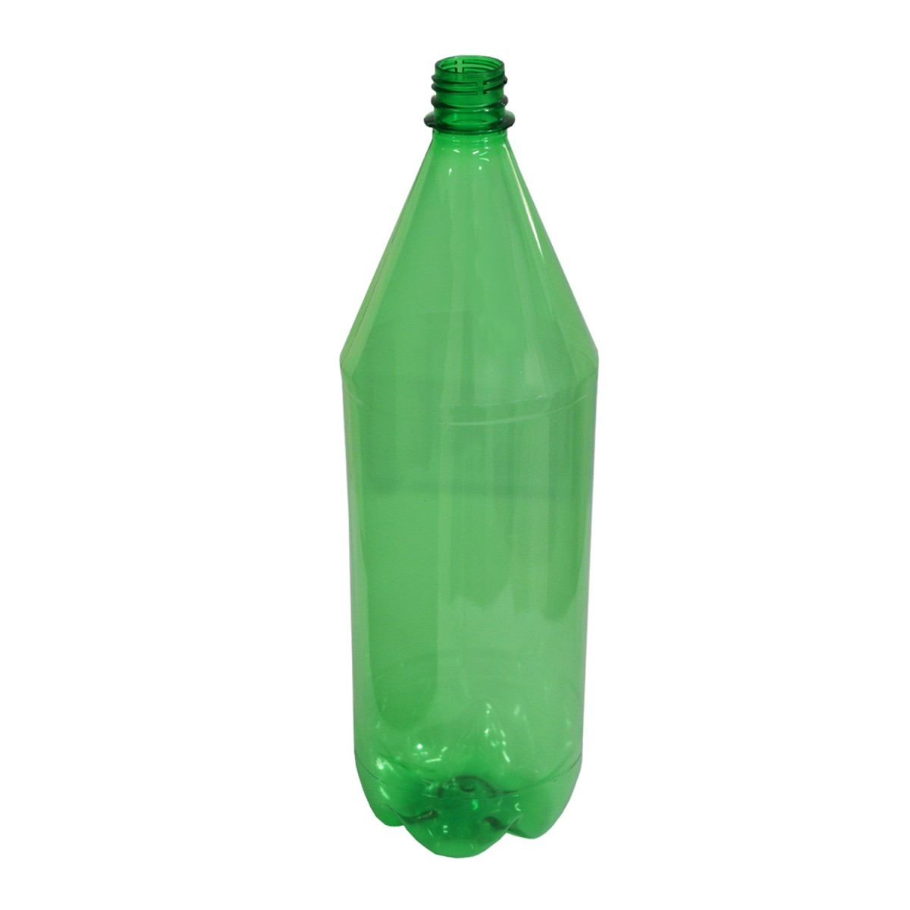
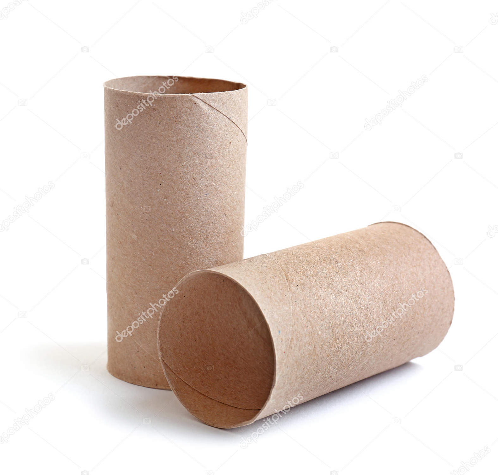
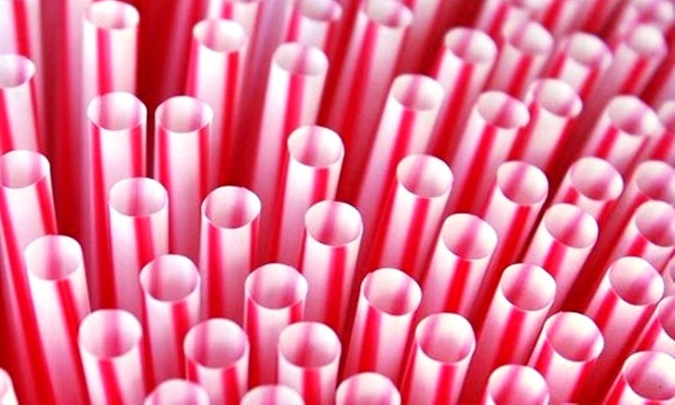
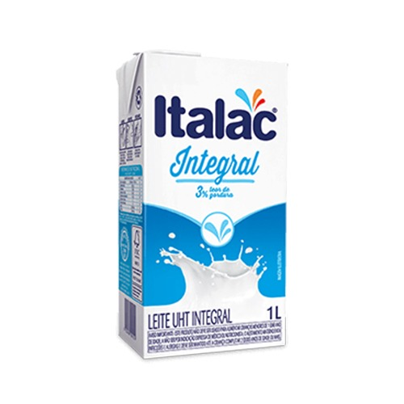
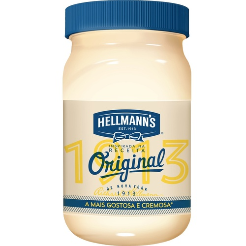
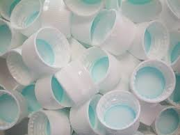

Reutilizar
Reutilizar é um verbo que diz respeito ao ato de voltar a usar algo. Neste sentido, o termo pode ser usado como sinónimo de reciclar (que consiste em submeter um produto ou um material a um determinado processo para que se possa voltar a utilizar) embora, nos dicionários, este termo não costume aparecer. Ao voltarmos a usar bens ou produtos (isto é, reutilizá-los), estamos a ajudar o planeta. Aquilo que já não se usa mais acaba por ir parar ao balde de lixo (ou contentor), incrementando o nível de resíduos. Por outro lado, quando deitamos algo fora, estamos a incentivar a produção de um novo produto para sua substituição, o que pode aumentar as emissões contaminantes.
|  |  |  |
|  |  |  |